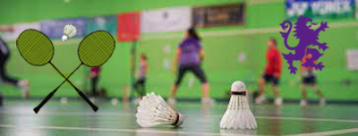

JAPAN: During spring break in 2023 I went on a trip to Japan. Japan has been on my bucket list for years and I was finally able to go. I went to Osaka, Kyoto, and Tokyo. I even went to the famous Universal Studios Japan in Osaka where I got to experience Ninetendo World. It was a surreal experience that surely surpassed my expectations. The food, culture, and overall atmosphere of Japan is an unforgetable one.
BADMINTON: As an extracurricular, I play badminton at Piedmont High School. During the school season I played girl's singles for Piedmont. Overall I had a 13-2 record for the 2023 season. Furthermore, for the WACC and NCS tournaments I played girls doubles and placed 2nd for both WACC and NCS with my partner Mandy. During the off season I train at Eastbay Badminton Association in Emeryville. Badminton is a big part of my life and I play almost daily. I hope to get first place next year!.